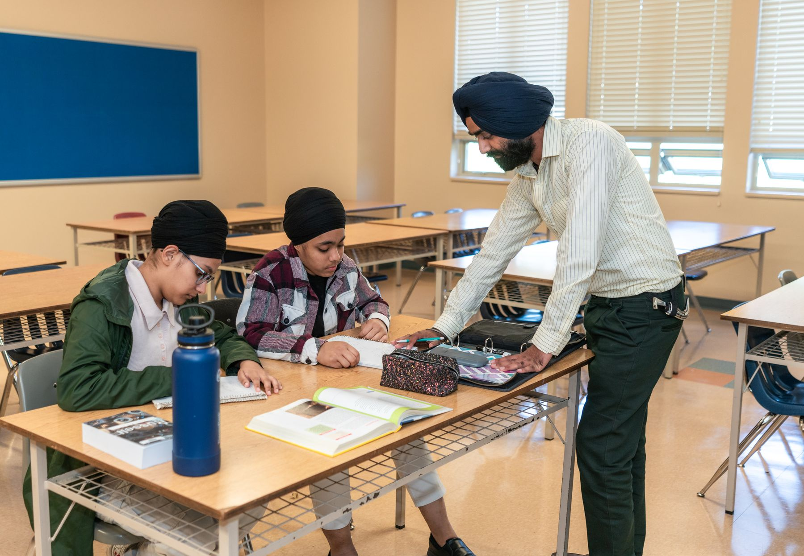
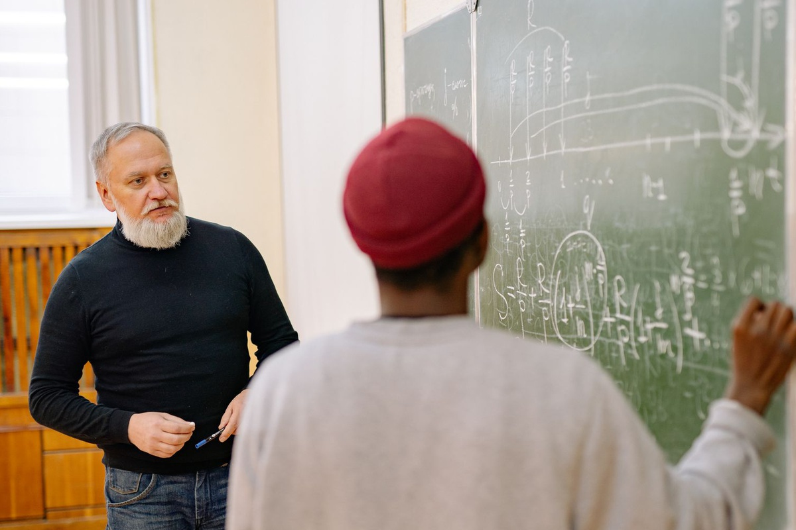

Method to fluency
Concept map → worked examples → mixed practice → timed test.
The student journey
A connected pathway turns schoolwork, tutoring, practice, and feedback into one understandable week.

Pick your stage
Subject pathways
Each pathway connects class explanation with an independent task.
Weekly learning rhythm
Class, practice, correction, and review remain visible instead of becoming four unrelated tasks.
Meet your tutors

14 years of teaching experience
Builds confidence through method comparison and questions.
View Profile →
11 years of teaching experience
Turns abstract models into clear and testable reasoning.
View Profile →
12 years of teaching experience
Connects reactions, calculations, and revision patterns.
View Profile →Student portal
One focused workspace keeps the next class, attendance, materials, tests, and faculty feedback easy to scan.
Today · 5:00 PM
23 present · 2 absent
Review signs when expanding.
Revision cycle on schedule.

Test feedback
Faculty feedback separates concept errors, rushed execution, and incomplete working so the next practice set has a clear purpose.
Student stories
Begin the journey
A placement conversation turns a broad concern into one sensible next step.